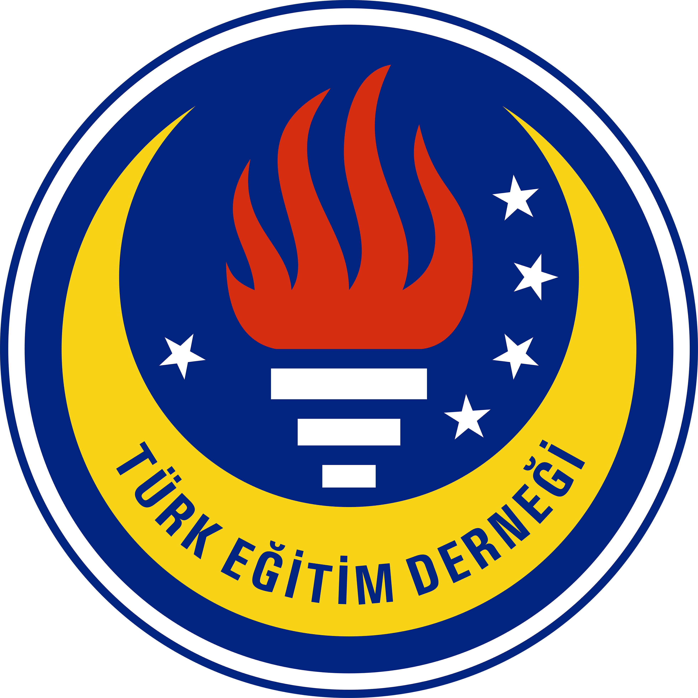

Analitik Zeka,
Mühendislik Disiplini.
Yazılım dünyasının hızını, Elektrik-Elektronik mühendisliğinin donanım temelleriyle birleştiriyorum. Amacım, sanayi odaklı ve toplumsal fayda yaratan akıllı sistemler geliştirmek.
Vizyoner Mühendislik Yaklaşımı
Manisa Celal Bayar Üniversitesi'nde Bilgisayar Mühendisliği eğitimime devam ederken, donanım bilgisini derinleştirmek adına Elektrik-Elektronik Mühendisliği Yan Dal programını yürütüyorum. TÜBİTAK 2209-B gibi sanayi odaklı projelerde LSTM derin öğrenme modelleri ve IoT mimarileri üzerine çalışarak teorik bilgimi endüstriyel çözümlere dönüştürüyorum.
Eğitim
Bilgisayar Mühendisliği
Manisa Celal Bayar Üniversitesi
2024 - Günümüz
E.E. Mühendisliği (Yan Dal)
Donanım & Sinyal İşleme Odağı
Aktif Program
TED Ege Bölge Başkanlığı
80+ bursiyerin operasyonel süreçlerini ve sosyal koordinasyonunu yöneterek; bütçe planlama, etkinlik yönetimi ve kriz yönetimi konularında profesyonel deneyim kazandım.
80+
Bursiyer
Ege
Bölge Sorumlusu

Kıvılcım Kütüphanesi
Kurucu ortağı olduğum bu girişimle, deprem bölgelerindeki köy okullarına sadece kitap değil, **donanım ve kütüphane altyapısı** sağladık. Bu süreçte paydaş yönetimi ve saha operasyonları konularında aktif sorumluluk üstlendim.
Saha Operasyon Yönetimi & Lojistik
Virtual Mouse AI
MediaPipe ve OpenCV tabanlı, el hareketlerini asenkron şekilde bilgisayar komutlarına çeviren sistem. `PyAutoGUI` optimizasyonları ile gecikmesiz kontrol sağlar.
# Smoothing Factor Implementation
curr_x = prev_x + (screen_x - prev_x) / smooth_factor
AMYS: Yoğunluk Sistemi
TÜBİTAK 2209-B Sanayiye Yönelik Proje. ESP32 ve MQTT protokolü üzerinden akan verileri LSTM derin öğrenme modeliyle işleyerek %90+ doğrulukla doluluk tahmini yapar.